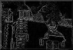

Die sich des
Vergangenen nicht
erinnern, sind dazu
verurteilt, es
noch einmal zu erleben.
Santayana
|
Neuigkeiten
Februar 2000
|
|
|
Vernichtungskrieg. Verbrechen der Wehrmacht 1941 bis 1944 |
|
|
Am Donnerstag, den 5. November erklärte Jan Philip Reemtsma, daß die Austellung nach massiver Kritik an der Auswahl der Fotos nicht mehr gezeigt wird. Sowohl die Braunschweiger Veranstaltung als auch die Amerikareise wurden abgesagt.
Presseschau:
|
|
|
| |
In Zusammenarbeit mit dem Historischen Centrum in Hagen und der Virtual Library Geschichte entsteht anlässlich der Anne-Frank-Ausstellung in Hagen das begleitende Internetangebot dazu. Die Ausstellung öffnete ihre Tore am 4. Juli 1999. |
Literatur zu Anne Frank und weitere Links zu Anne Frank |
|
Steven Spielbergs Shoah Foundation Die "Survivors of the Shoah Visual History Foundation", kurz: Shoah Foundation hat durch den Besuch von Steven Spielberg auf der Berliner Biennale im Frühjahr sehr viel Aufmerksamkeit auch in Deutschland erfahren und viele Leute haben im Internet nach den Webseiten der Shoah Foundation gesucht. Manche haben auch den Weg auf unsere Seiten gefunden und uns bisweilen mit der Shoah Foundation verwechselt.
Damit der Weg auf unsere Seiten künftig nicht vergeblich ist, haben wir unser Special: Steven Spielberg aus dem August 1997 aktualisiert und stark erweitert. Auch möchten wir an dieser Stelle auf die Entstehungsgeschichte des Shoah Projects hinweisen, die in einem Interview mit dem KriT-Journal aus dem Jahr 97 geschildert wird. | |
|
starb 1942 im Konzentrationslager Treblinka, in das er zusammen mit den Kindern des von ihm geleiteten Waisenhauses verbracht worden war. Stefan Mannes lädt Sie auf die Website ein: http://www.janusz-korczak.de/ |
|
|
|
|